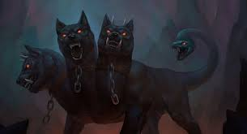
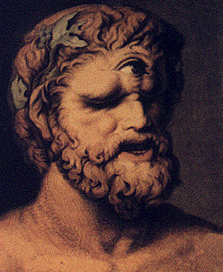

Uno de los más populares monstruos de la
Mitología griega, Medusa era una hermosa doncella de cabellos de oro. Ella se
comprometió a ser célibe toda su vida como una sacerdotisa de Atenea hasta que
ella cayó en el amor con Poseidón.
Ella iba en contra de su voto y se casó con
él.
Para este Athena castigaba espantosamente.
Ella se dio la Medusa en una horrible criatura, haciendo que sus ojos
inyectados en sangre y con furia en su rostro haglike. A la vez hermoso cabello
se transformó en venenosas, serpientes peligrosas. Su puro blanco lechoso piel
se volvió de un miedo tono verde. Desde entonces ella habitaron, avergonzado,
rechazado y odiado por todo el mundo
Desde allí, por Athena la maldición de que nadie miraba a convertirse en piedra.

La Hidra de Lerna, en la mitología griega,
era una serpiente acuática de enorme tamaño, un aliento venenoso y múltiples
aterradoras cabezas que moraban en las profundidades del lago Homónimo cerca de
Nauplia, bajo sus aguas había una entrada al inframundo que la Hidra tenía
encargada de cuidar.
La Hidra de Lerna era una criatura muy
parecida a una serpiente, pero esta bestia acuática poseía más cabezas y contaba
con una respiración abruptamente venenosa que l
a hacía muy peligrosa, sin
embargo, Heracles se encargó de acabar con ella durante uno de sus doce
trabajos.

En la mitología, el Can Cerbero, era un perro
vigilante, de aspecto infernal, con tres cabezas, ojos rojos sangrientos y con
una luz por dentro, cabezas de perros rabiosos y en vez de una cola una
serpiente con veneno mortal.
Las cabezas del Cancerbero tenían nombres:
veltesta, tretesta y drittesta, que significaban cabeza izquierda, tercera y
derecha. Cada una de ellas tenía colmillos afilados, de los cuales se desprende
un veneno mortal al producirse una mordida.
Sus enemigos le temen dado a su gran fuerza y su agresividad con la que cuenta este animal, condiciones que son apoyadas con las serpientes que se desprenden de su cola y que son su complemento a la hora del ataque.

Los Cíclopes eran gigantes; tuerto monstruos; una raza salvaje de lawless criaturas que poseen ni modales sociales ni el temor de los Dioses. Los cíclopes significa ‘alrededor de los ojos.’ Considera los hijos de Urano y Gea fueron los que hacían la obra del Dios Hefesto , cuyo taller estaba en el corazón de la montaña volcánica del Etna. Según Homero, la Odisea , donde introdujo probablemente el más famoso de los Cíclopes, Polifemo, los Cíclopes eran los hijos de Poseidón, no Gaea.

En la mitología griega, los Centauros (o
Kentauroi) son mitad hombre, mitad caballo criaturas que habitaban las montañas
y los bosques de Tesalia. Los centauros eran primal, existente en tribus y hacer
sus casas en las cuevas, la caza de animales salvajes y se armarán con las
rocas y las ramas de los árboles. Hay muchos mitos de origen de los alrededores
centauros; una de ellas es que Centaurus, la descendencia del Rey Ixión,
acoplado con la nube de la ninfa, Nephele quien celoso de Zeus creó a semejanza
de H
era. Nacieron los centauros y los dejó en el Monte Pelión, donde las hijas
de la inmortalidad del centauro Quirón cuidó de ellos.